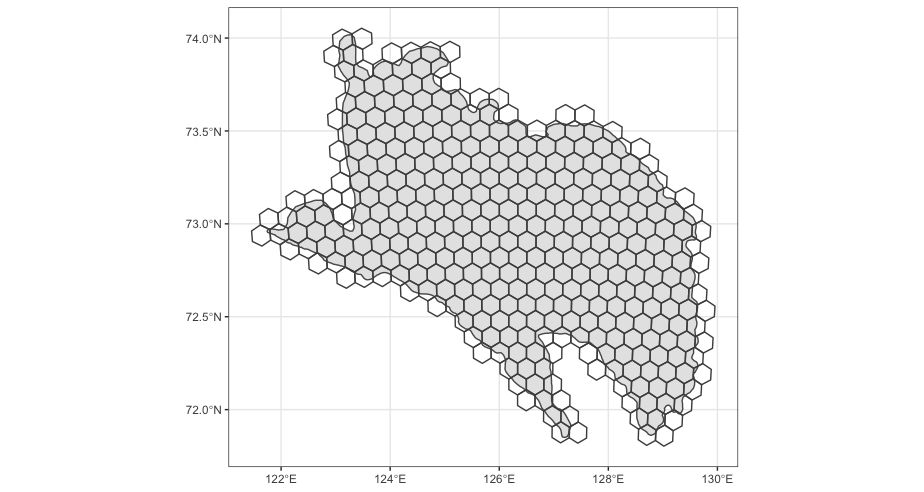

Habitat classification
Preliminary results (grid cell approach)
R Library
library(stars)
library(raster)
library(tidyverse)
library(sf)
sf::sf_use_s2(FALSE)Grid
load("data/tmp/roi.rda")
deltaCen <- st_centroid(roi) %>% st_coordinates()
proj <- glue::glue("+proj=laea +lon_0={deltaCen[,1]} +lat_0={deltaCen[,2]}")
chks <- st_as_sfc(st_bbox(roi), crs = 4326) %>% st_transform(proj) %>%
st_make_grid(cellsize = 11000, square = F) %>% st_transform(4326)
chks <- chks[st_intersects(chks, roi %>% st_transform(st_crs(chks)), sparse = FALSE)[,1]]
ggplot() +
geom_sf(roi, mapping = aes(geometry = geometry)) +
geom_sf(chks, mapping = aes(geometry = geometry), col = "grey30", fill = NA) +
theme_bw()
Phenology

load("Output/deltaSum_small.rda") ## [classes, dates, index[ndvi, ndsi], chunks]
# dim(deltaSum$dat)
dts <- deltaSum$date
doy <- as.numeric(format(dts, "%j"))
yrs <- as.numeric(format(dts, "%Y"))
chks <- deltaSum$meta
plot(roi)
plot(chks, add = T)
phenChunk <- list()
# levels: chunks, class, year
for(chk in 1:dim(deltaSum$dat)[4]) {
cat(sprintf('\rChunk %d of %d ',
chk, dim(deltaSum$dat)[4]))
chkDat <- deltaSum$dat[,,,chk]
# matplot(t(chkDat[,,2]), x = dts, pch = 16, cex = 0.7, type = 'p')
phen <- abind::abind(lapply(1:11, function(c) {
tryCatch({
abind::abind(lapply(unique(yrs), function(y) {
subY <- which(yrs%in%c(y+c(-2:1,2)))
subDOY <- doy[subY]
dat <- chkDat[c,subY,]
w <- scales::rescale(dnorm(yrs[subY] - y, 0, 0.75), to = c(0.1, 1))
# matplot(dat, x = subDOY, type = "p", pch = 16)
## ndsi
sn <- rbind(cbind(subDOY, ifelse(dat[,2]<0.4, 0, 1), c(w)),
cbind(c(1:50, 300:365), 1, 1))
mle <- lsatFitGauss(sn[!is.na(sn[,2]),])
# plot(sn[,1:2], pch = 16, col = c(mapply(adjustcolor, col = "cornflowerblue", alpha.f = sn[,3])))
fit <- gauss.curve(mle)
# lines(1:365, fit, col = "red")
sPhen <- sapply(c(0.9, 0.5, 0.1), function(x) GetThresh(x, 1-fit, TRUE, TRUE))
# abline(v = sPhen[,1])
# sPhen
## ndvi
ev <- rbind(cbind(c(subDOY), ifelse(dat[,1]<0.05, 0, dat[,1]), c(w)),
cbind(c(1:50, 300:365), 0, 1))
ev[subDOY%in%which(fit>0.9),2] <- 0
ev <- ev[!is.na(ev[,2]),]
# plot(ev[,1:2], pch = 16, col = c(mapply(adjustcolor, col = "darkgreen", alpha.f = ev[,3])))
spl <- smooth.spline(x = ev[,1], y = ev[,2], w = ev[,3], spar = 0.6)
xSmooth <- predict(spl, 1:365)$y
xSmooth[xSmooth<0] <- 0
# lines(xSmooth, lwd = 2, col = "orange")
peaks <- FindPeaks(xSmooth)
peaks <- peaks[xSmooth[peaks]>0.15]
# abline(v = peaks, lty = 3)
pars <- list(rel_amp_frac = 0, rel_peak_frac = 0, min_seg_amplitude = 0.075)
segs <- tryCatch(do.call("rbind", GetSegs(peaks, xSmooth, pars)), error = function(e) NULL)
# apply(segs, 1, function(x) rect(c(1:365)[x[1]], 0, c(1:365)[x[3]], 1, col = adjustcolor("grey80", alpha.f = 0.2), border = "grey10"))
if(!is.null(segs)) {
if(nrow(segs)>1) {
max_in <- min(segs[order(xSmooth[segs[,2]], decreasing = T),2][1:2])
max_out <- max(segs[order(xSmooth[segs[,2]], decreasing = T),2][1:2])
seqRan <- c(min(segs[order(xSmooth[segs[,2]], decreasing = T),1]),
max(segs[order(xSmooth[segs[,2]], decreasing = T),3]))
} else {
max_in <- max_out <- segs[2]
seqRan <- segs[c(1,3)]
}
dtsSm <- 1:365
max <- dtsSm[max_in]
# abline(v = dtsSm[max_in], lty = 3, col = "red", lwd = 3)
amp <- diff(range(xSmooth[seqRan[1]:seqRan[2]]))
q10gup <- with(data.frame(t = dtsSm, y = xSmooth)[seqRan[1]:max_in,], rev(t)[GetThresh(min(y) + diff(range(y))*0.1, rev(y), gup = F, first_greater = T)])
# abline(h = with(data.frame(t = dtsSm, y = xSmooth)[seqRan[1]:max_in,], min(y) + diff(range(y))*0.1), v = q10gup, col = "blue")
q90gup <- with(data.frame(t = dtsSm, y = xSmooth)[seqRan[1]:max_in,], rev(t)[GetThresh(max(y) - diff(range(y))*0.1, rev(y), gup = F, first_greater = T)])
# abline(h = with(data.frame(t = dtsSm, y = xSmooth)[seqRan[1]:max_in,], max(y) - diff(range(y))*0.1), v = q90gup, col = "firebrick")
q90sen <- with(data.frame(t = dtsSm, y = xSmooth)[max_out:seqRan[2],], rev(t)[GetThresh(max(y) - diff(range(y))*0.1, rev(y), gup = T, first_greater = F)])
# abline(h = with(data.frame(t = dtsSm, y = xSmooth)[max_out:seqRan[2],], max(y) - diff(range(y))*0.1), v = q90sen, col = "blue")
area <- with(data.frame(t = q10gup:q90sen, y = xSmooth[q10gup:q90sen]),
MESS::auc(t, y, type = 'linear'))
ePhen <- round(c(amp, q10gup, q90gup, max, q90sen, area),2)
} else {
ePhen <- rep(NA, 6)
}
array(c(sPhen, ePhen), dim = c(1, 9))
}), along = 3)
}, error = function(e) array(dim = c(1,9,length(unique(yrs)))))
}), along = 1)
phenChunk[[chk]] <- phen
} phenTab <- do.call("rbind", lapply(1:length(phenChunk), function(x) {
do.call("rbind", lapply(1:9, function(t) {
tibble(chunk = x, type = t, habitat = as.factor(rep(1:11, dim(tmp)[2])), year = rep(2000:2021, each = dim(tmp)[1]), val = c(phenChunk[[x]][,t,]))
}))
}))
names <- c("sm90", "sm50", "sm10", "amp", "q10g", "q90g", "max", "q90s", "area")
descr <- c("snow melt timing (10%) [yday]",
"snow melt timing (50%) [yday]",
"snow melt timing (90%) [yday]",
"ndvi amplitude [ndvi]",
"greenup (10%) [yday]",
"greenup (90%) [yday]",
"max [ndvi]",
"greendown (10%) [yday]",
"auc (gup10% - sen10%) [ndvi]")
units <- c("yday", "yday", "yday", "ndvi", "yday", "yday", "yday", "yday", "ndvi")
lmTrendAll <- phenTab %>% group_by(chunk, type) %>%
summarise(trend = tryCatch(summary(lm(val~year))$coefficients[2,1], error = function(e) NA))
pl <- lapply(c(3,2,1,5,6,4,9), function(t) {
# cat(t)
medPlot <- deltaSum$meta %>% st_as_sf() %>% bind_cols(
phenTab %>% filter(type==t) %>% group_by(chunk) %>% summarise(median = median(val, na.rm = T)) %>% select(median))
scale <- quantile(medPlot$median, probs = c(0.01, 0.99), na.rm = T)
if(t%in%c(4,9)) {
cols = viridis::viridis(20)
} else cols = viridis::rocket(20)
p1 <- ggplot(medPlot) +
geom_sf(mapping = aes(fill = median), size = 0.3) +
scale_fill_gradientn(colors =cols,
breaks = round(seq(scale[1], scale[2], length = 5),3),
limits = scale[c(1,2)], name = units[t]) +
labs(x = "", y = "",
title = "median (2000-2021)",
tag = "A") +
theme(
axis.text.x = element_text(size = 10),
axis.text.y = element_text(size = 10),
title = element_text(size = 13),
panel.grid.major = element_blank(), panel.grid.minor = element_blank(),
panel.background = element_rect(fill = "grey40",
colour = "grey40"),
panel.border = element_rect(colour = "black", fill = "transparent"),
panel.grid = element_line(size = 0.08)
) +
coord_sf(
xlim = c(st_bbox(roi)["xmin"]+0.25, st_bbox(roi)["xmax"]+0.1),
ylim = c(st_bbox(roi)["ymin"], st_bbox(roi)["ymax"]-0.1)
)
p2 <- ggplot(phenTab %>% filter(type==t)) +
geom_boxplot(aes(x=habitat, y = val), fill = classCol[1:11]) +
theme_bw() +
labs(x = "Habitat class", y = descr[t],
title = "",
tag = "B") +
theme(
axis.text.x = element_text(size = 10),
axis.text.y = element_text(size = 10),
title = element_text(size = 13)
)
p3 <- ggplot(phenTab %>% filter(type==t), mapping = aes(x = year, y = val, fill = habitat, col = habitat)) +
geom_point(alpha = 0.05, shape = 16, show.legend = F) +
geom_smooth(method = "gam", formula = y ~ s(x, bs = "cs"), se = T, show.legend = F) +
scale_color_manual(values = classCol[1:11]) +
theme_bw() +
labs(x = "Years", y = "",
title = "",
tag = "C") +
theme(
axis.text.x = element_text(size = 10),
axis.text.y = element_text(size = 10),
title = element_text(size = 13)
)
lmTrend <- deltaSum$meta %>% st_as_sf() %>% bind_cols(trend = lmTrendAll %>% filter(type==t) %>%
pull(trend)) %>% filter(!is.na(trend))
bins <- seq(-abs(max(lmTrend$trend)), abs(max(lmTrend$trend)), length = 50)
lmBar <- lmTrend %>% as_tibble() %>% mutate(gr = cut(trend, bins, labels = FALSE)) %>%
group_by(gr) %>% summarise(f = n()) %>% full_join(tibble(gr = 1:length(bins), bins = bins)) %>%
arrange(gr)
p4 <- ggplot(lmBar %>% mutate(f = ifelse(is.na(f), 0, f))) +
geom_col(aes(bins, f, fill = gr), show.legend = F) +
theme_bw() +
scale_fill_gradientn(colors = grDevices::colorRampPalette(c("blue", "white", "red"))(length(bins))) +
labs(x = "Trend (slope)", y = "",
title = "",
tag = "D") +
theme(
axis.text.x = element_text(size = 10),
axis.text.y = element_text(size = 10),
title = element_text(size = 13)
)
if(t%in%c(4,9)) {
scale = quantile(lmTrendAll %>% filter(type==t) %>% pull(trend), probs = c(0.01, 0.99), na.rm = T)
} else scale = quantile(lmTrendAll %>% filter(type!=4 & type!=9) %>% pull(trend), probs = c(0.01, 0.99), na.rm = T)
bins <- seq(-abs(max(scale)), abs(max(scale)), length = 10)
p5 <- ggplot(lmTrend) +
geom_sf(mapping = aes(fill = trend), size = 0.3) +
scale_fill_steps2(low = "blue", mid = "white", high = "brown",
breaks = round(bins, 4),
limits = c(-abs(max(scale)), abs(max(scale))),
name = paste0(units[t], "/year")) +
labs(x = "", y = "",
title = "Trend (linear slope)",
tag = "E") +
theme(
axis.text.x = element_text(size = 10),
axis.text.y = element_text(size = 10),
title = element_text(size = 13),
panel.grid.major = element_blank(), panel.grid.minor = element_blank(),
panel.background = element_rect(fill = "grey40",
colour = "grey40"),
panel.border = element_rect(colour = "black", fill = "transparent"),
panel.grid = element_line(size = 0.08)
) +
coord_sf(
xlim = c(st_bbox(roi)["xmin"]+0.25, st_bbox(roi)["xmax"]+0.1),
ylim = c(st_bbox(roi)["ymin"], st_bbox(roi)["ymax"]-0.1)
)
# png(glue::glue("Figures/{names[t]}.png"), width = 4000, height = 800, res = 200)
p <- gridExtra::grid.arrange(p1, p2, p3, p4, p5, nrow = 1,
left = grid:::textGrob(descr[t], just = "centre", rot = 90, gp = grid:::gpar(col="grey10", fontsize = 17)))
# p
# dev.off()
})
png(glue::glue("Figures/smallGrid.png"), width = 4700, height = 800*length(pl), res = 200)
do.call("grid.arrange", c(pl, ncol = 1))
dev.off()